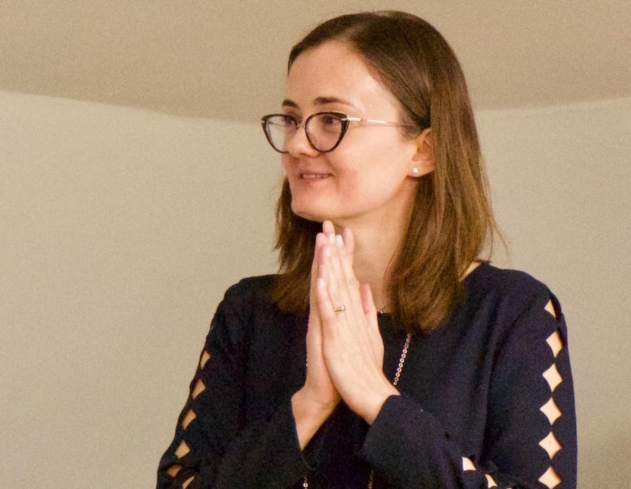
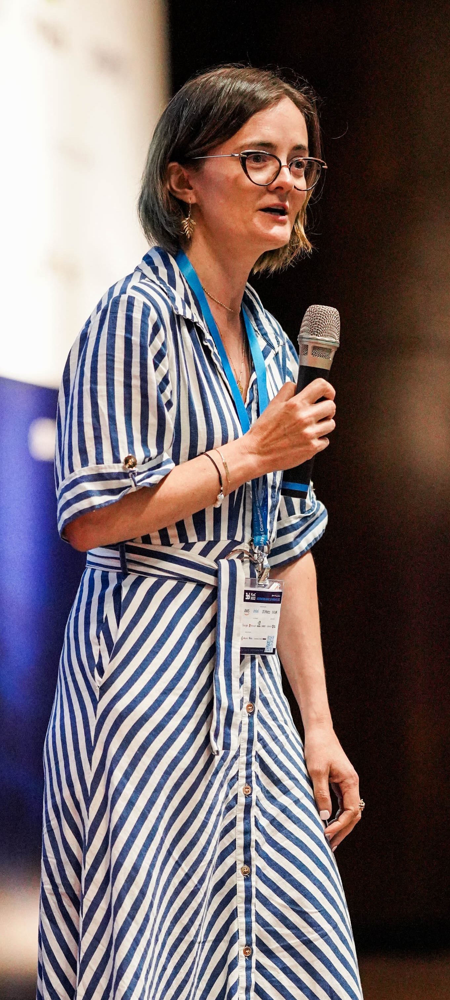

<div>
  <div id="biography" class="page home" data-pos="home">
    <div class="pageheader">
      <div class="headercontent">
        <div class="section-container">
          <div class="row">
            <div class="col-sm-2 visible-sm"></div>
            <!--<div class="col-sm-7 col-md-5">
               <div class="slideshow-container" style="padding-top: 70px;">
                <div class="mySlides">
                  <div class="biothumb">
                    <div class="numbertext">1 / 5</div>
                    
                    <div class="overlay">
                      <h4>Alexandra @ Bellairs 2014</h4>
                    </div>
                  </div>
                </div>
                 <div class="mySlides">
                  <div class="biothumb">
                    <div class="numbertext">2 / 5</div>
                    
                    <div class="overlay">
                      <h4>Alexandra @ inaugural 2018</h4>
                    </div>
                  </div>
                </div>
                <div class="mySlides">
                  <div class="biothumb">
                    <div class="numbertext">3 / 5</div>
                    
                    <div class="overlay">
                      <h4>Alexandra @ 2022</h4>
                    </div>
                  </div>
                </div>
                <div class="mySlides">
                  <div class="biothumb">
                    <div class="numbertext">4 / 5</div>
                    
                    <div class="overlay">
                      <h4>Alexandra @ 2022</h4>
                    </div>
                  </div>
                </div>
                <div class="mySlides">
                  <div class="biothumb">
                    <div class="numbertext">5 / 5</div>
                    
                    <div class="overlay">
                      <h4>Alexandra @ 2023</h4>
                    </div>
                  </div>
                </div> 
                 Next and previous buttons
                <a class="prev" onclick="plusSlides(-1)">&#10094;</a>
                <a class="next" onclick="plusSlides(1)">&#10095;</a
                The dots/circles
                <div style="text-align:center">
                  <span class="dot" onclick="currentSlide(1)"></span>
                  <span class="dot" onclick="currentSlide(2)"></span>
                  <span class="dot" onclick="currentSlide(3)"></span>
                  <span class="dot" onclick="currentSlide(4)"></span>
                  <span class="dot" onclick="currentSlide(5)"></span>
                </div>
              </div>
              <ul class="list-unstyled" style="padding-top: 20px;">
                <li><i class="icon-envelope"></i>&nbsp; alexandra.silva@ cornell.edu (work)
                <li><i class="icon-envelope"></i>&nbsp; alexandra.silva@gmail. com (private)
                <li><i class="icon-phone"></i>&nbsp;+1 (607) 255-1363 (internal: 51363)
                <li><br /><i class="icon-globe"></i>&nbsp;Address:<br />
                  Department of Computer Science<br />
                  434 Gates Hall<br />
                  Cornell University<br />
                  Ithaca, New York 14853-7501<br />
                  USA<br />
              </ul>
              <div class="biothumb">
                
                <div class="overlay">
                  <h4>Alexandra @ Bellairs 2014</h4>
                </div>
              </div>
              <div class="biothumb">
                
                <div class="overlay">
                  <h4>Alexandra @ inaugural 2018</h4>
                </div>
              </div> 
            </div>-->
            <div class="clearfix visible-sm visible-xs"></div>
            <div class="col-sm-13 col-md-12">
              <h3 class="title">Short Bio</h3>
              <p>I am a Professor in the <a href="https://www.cs.cornell.edu">Computer Science Department</a> at <a
                  href="https://www.cornell.edu">Cornell University</a>. Part of my research group is still based at <a
                  href="http://www.ucl.ac.uk">University College London</a>, so in the coming years I will also be
                spending some time at UCL, where I was previously a Royal Society Wolfson Fellow and Professor of
                Algebra, Semantics, and Computation.</p>
              <p>This webpage gathers all the information about my research, including my <a
                  href="/#/publications.html">publications</a> and <a href="/#/talks.html">talks</a>. You can read <a
                  href="/#/aboutme.html">about me</a>, my <a href="/#/activities.html">professional activities</a>,
                check <a href="/#/calendar.html">where I am</a> at the moment and <a
                  href="http://alexandrasilva.org/files/cv.pdf">download my CV</a>.</p>
              <p>I am very fortunate to work an amazing <a href="/#/group.html">group</a> of students and post-docs in a
                range of <a href="/#/projects.html">projects</a>! </p>
              <p>My main research focuses on the modular development of specification languages and algorithms for
                models of computations. A lot of my work is developed from the unifying perspective offered by
                coalgebra, a mathematical framework established in the last decades.</p>
            </div>
          </div>
        </div>
      </div>

      <div class="pagecontents">
        <div class="section color-1">
          <div class="section-container">
            <div class="row text-center">
              <!-- <div class="col-md-7 col-sm-12"> -->
              <div class="col-md-12 col-sm-12">
                <div class="title text-center">
                  <h3>News</h3>
                </div>
                <ul class="ul-dates" ng-controller="NewsCtrl">
                  <li ng-repeat="info in news | limitTo: 7">
                    <div class="dates">
                      <span ng-bind="info.date"></span>
                    </div>
                    <div class="content" ng-bind-html="info.note"></div>
                  </li>
                </ul>
                <a href="#/news.html" type="button" class="btn btn-info pull-right">More »</a>
              </div>
              <!-- <div class="col-md-5 col-sm-12">
                <h4>Contact</h4>
                <ul class="list-unstyled">
                  <li><i class="icon-envelope"></i>&nbsp; alexandra.silva@ cornell.edu (work)
                  <li><i class="icon-envelope"></i>&nbsp; alexandra.silva@gmail. com (private)
                  <li><i class="icon-phone"></i>&nbsp;+1 (607) 255-1363 (internal: 51363)
                  <li><br /><i class="icon-globe"></i>&nbsp;Address:<br />
                    Department of Computer Science<br />
                    434 Gates Hall<br />
                    Cornell University<br />
                    Ithaca, New York 14853-7501<br />
                    USA<br />
                </ul>
              </div> -->
            </div>
          </div>
        </div>
      </div>
    </div>
  </div>
</div>